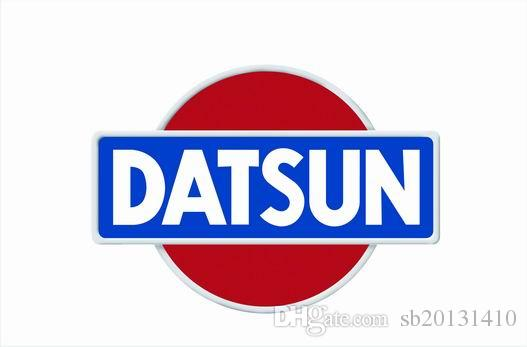
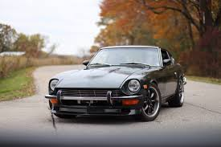
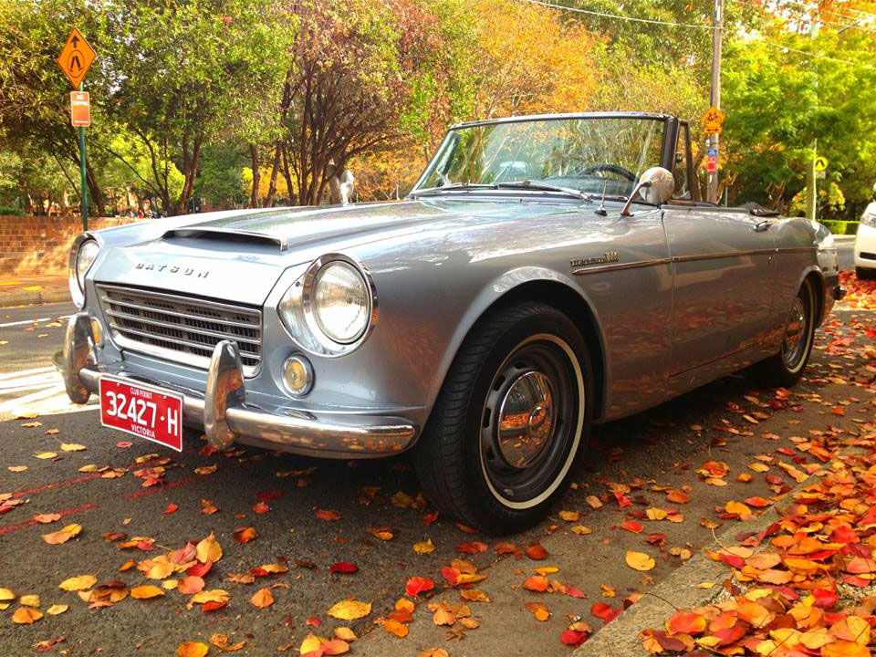

Datsun (/ˈdætsən/) is an automobile brand owned by Nissan. Datsun's original production run began in 1931. From 1958 to 1986, only vehicles exported by Nissan were identified as Datsun. By 1986 Nissan had phased out the Datsun name, but re-launched it in June 2013 as the brand for low-cost vehicles manufactured for emerging markets. In 1931, Dat Motorcar Co. chose to name its new small car "Datson", a name which indicated the new car's smaller size when compared to the DAT's larger vehicle already in production. When Nissan took control of DAT in 1934, the name "Datson" was changed to "Datsun", because "son" also means "loss" (損 son) in Japanese and also to honour the sun depicted in the national flag – thus the name Datsun: Dattosan (ダットサン Dattosan). Nissan phased out the Datsun brand in March 1986. The Datsun name is internationally well known for the 510, Fairlady roadsters, the Fairlady (S30 240Z, 260Z, 280Z) S130 280ZX coupes
Popular Datsuns
 The Nissan S30 (sold in Japan as the Nissan Fairlady Z and in other markets as the Datsun 240Z, then later as the 260Z and 280Z) was the first generation of Z GT two-seat coupes, produced by Nissan Motors, Ltd. of Japan from 1969 to 1978. One of the most successful sports car lines ever produced, the trend-setting S30 was designed by a team led by Yoshihiko Matsuo, the head of Nissan's Sports Car Styling Studio.
 The Datsun 510 was a series of the Datsun Bluebird sold from 1968 to 1973, and offered outside the U.S. and Canada as the Datsun 1600.
According to AutoWeek's G.D. Levy, the 510 has often been called the "poor man's BMW."
The 510's engineering was inspired by contemporary European sedans, particularly the 1966 BMW 1600-2 — incorporating a SOHC engine, MacPherson strut suspension in front and independent, semi-trailing arms in the back. The styling is attributed to Datsun in-house designer, Teruo Uchino.
The Datsun 510 was a series of the Datsun Bluebird sold from 1968 to 1973, and offered outside the U.S. and Canada as the Datsun 1600.
According to AutoWeek's G.D. Levy, the 510 has often been called the "poor man's BMW."
The 510's engineering was inspired by contemporary European sedans, particularly the 1966 BMW 1600-2 — incorporating a SOHC engine, MacPherson strut suspension in front and independent, semi-trailing arms in the back. The styling is attributed to Datsun in-house designer, Teruo Uchino.
 The Datsun Sports (called Datsun Fairlady in the Japanese and Australian markets), was a series of roadsters produced by Nissan in the 1960s. The series was a predecessor to the Z-car in the Fairlady line, and offered a competitor to the European MG, Triumph, Fiat and Alfa Romeo sports cars. The line began with the 1959 S211 and continued through 1970 with the SP311 and SR311 lines.